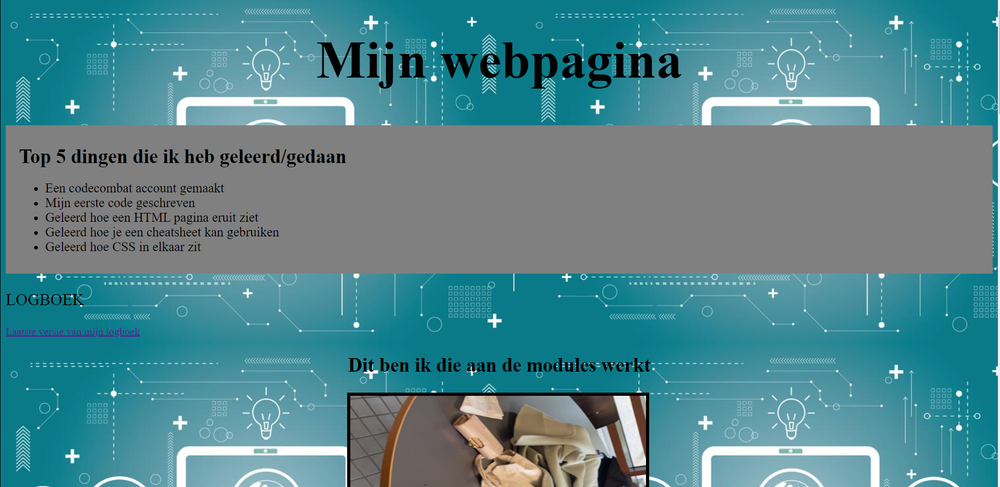
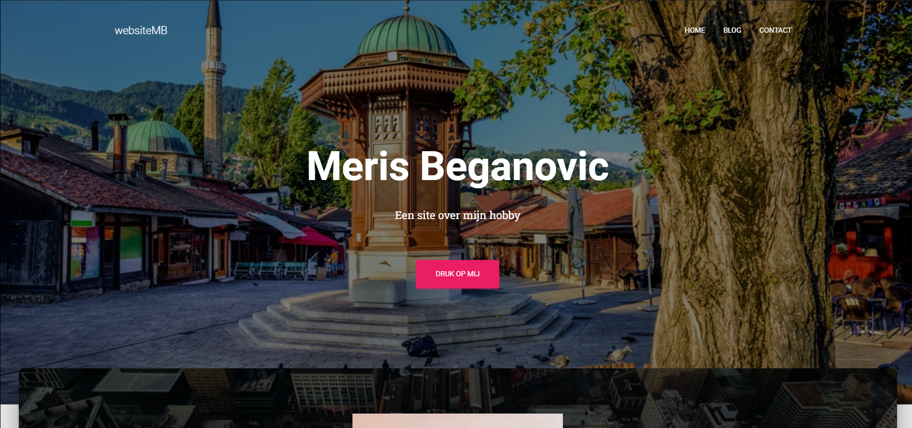

Wat heb ik geleerd?
Korte Samenvatting
Ik heb heel veel geleerd tot nu toe vind ik zelf, ik heb nooit zoveel tijd gestoken in school en ervan genoten zoals dit jaar! Het jaar begon met een simpele webpagina maken, hiervoor leerden wij de basis elementen en de basis CSS stijlen. Met dit allemaal moesten wij een webpagina maken die er uiteindelijk zo uitzag. (Op de Projecten pagina kan je de hele website bekijken!)
Na het bouwen van de webpagina moest ik een website bouwen met behulp van WordPress, deze kwam er zo uit te zien. Dit was de makkelijkste opdracht tot nu toe omdat je alleen content moest invullen en dan had je al een mooie website! (Op de Projecten pagina kan je de hele website bekijken!)
Als laatst wil ik iets over javascript vertellen. Als het goed is heb je het al opgemerkt maar aan de bottom van elke pagina staat er een knop met 'Save'. Deze knop heeft niet echt een functie maar ik moest voor de opdracht een stukje JavaScript schrijven, dus dat heb ik op deze manier gedaan.